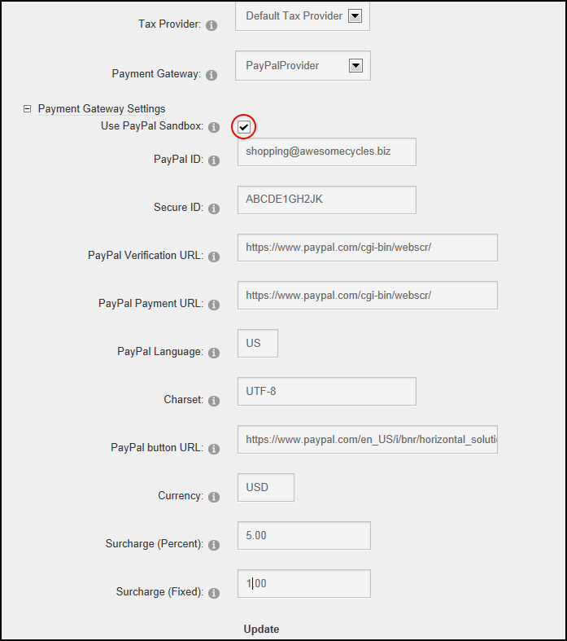

- Mark
 the check box to use the store in test mode only. Transactions are not live in this mode.
the check box to use the store in test mode only. Transactions are not live in this mode. - Unmark
 the check box to begin accepting payments.
the check box to begin accepting payments.
How to enable or disable the PayPal sandbox or test mode on the Store using the Store Admin module. Enabling the sandbox allows orders to be sent to the payment gateway without taking live transactions. This tutorial assumes PayPal has already been configured as the gateway.
